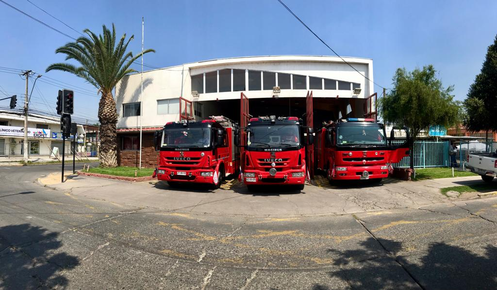

HISTORIA TERCERA COMPAÑIA
Material Actual:
Renault 210: Las bombas Renault 210 son una adición moderna y eficiente a nuestro equipo de extinción de incendios, brindando un rendimiento óptimo en situaciones de emergencia.
Iveco Magirus: Tanto nuestras bombas como la unidad de rescate Iveco Magirus representan lo último en tecnología y capacidad de respuesta en la lucha contra incendios y rescate.
Unidad de rescate Iveco Magirus: Nuestra unidad de rescate Iveco Magirus es un componente esencial de nuestras operaciones, equipada para abordar situaciones de emergencia y salvar vidas.
